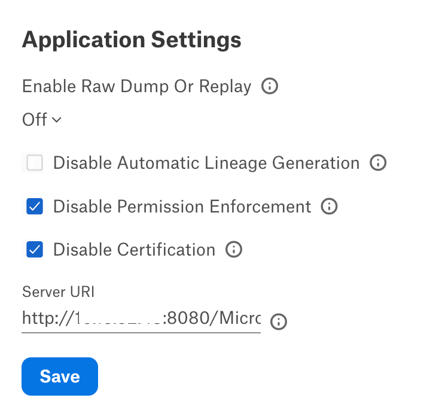
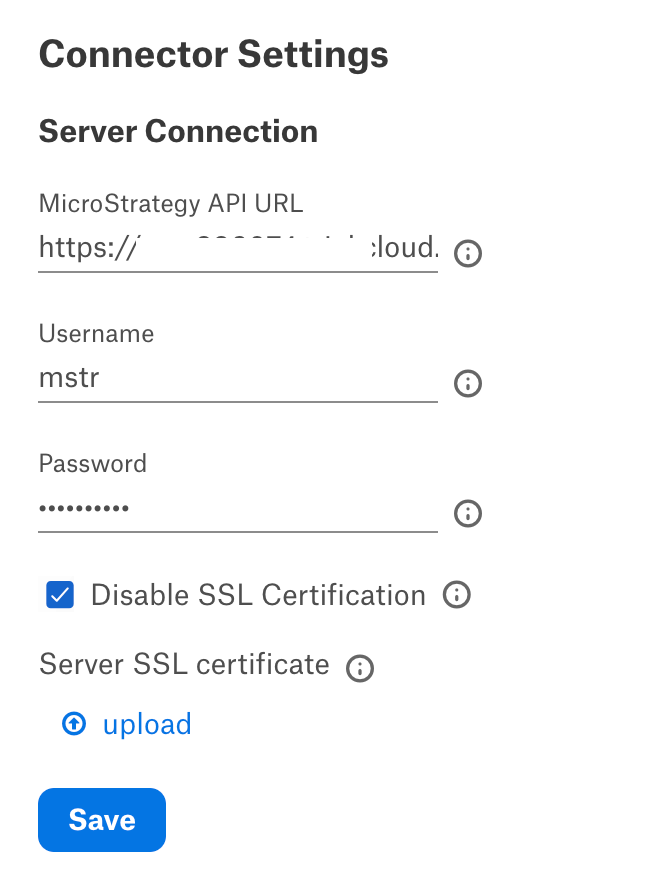
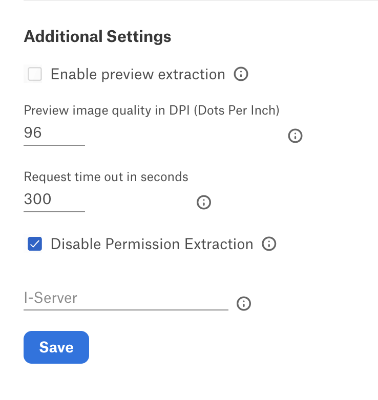

MicroStrategy OCF Connector: Install and Configure¶
Alation Cloud Service Applies to Alation Cloud Service instances of Alation
Customer Managed Applies to customer-managed instances of Alation
The MicroStrategy OCF connector can be used to catalog objects from MicroStrategy version 2021 and later. Follow these steps to perform the required configuration on the MicroStrategy side and in Alation.
Preliminaries¶
Firewall Configuration¶
Open and whitelist the outbound ports 443 and 8080 on the MicroStrategy server for communication via the REST API.
Service Account¶
Create a service account with the View Grouping permission for all the projects you want to extract. See How to Create a User in MicroStrategy documentation for more information.
MicroStrategy URI¶
Server URI Format¶
Java-Based MicroStrategy Web¶
<http/https>://<domain name>/MicroStrategy/servlet/mstrWeb
Or
<http/https>:<hostname:portnumber>/MicroStrategy/servlet/mstrWeb
Example:
http://10.13.52.48:8080/MicroStrategy/servlet/mstrWeb
Or
https://mstr.instance.com/MicroStrategy/servlet/mstrWeb
Microsoft .NET-Based MicroStrategy Web¶
<http/https>://<domain name>/MicroStrategy/asp/Main.aspx
Or
<http/https>:<hostname:portnumber>/MicroStrategy/asp/Main.aspx
Example:
http://10.13.52.48:8080/MicroStrategy/asp/Main.aspx
Or
https://mstr.instance.com/MicroStrategy/asp/Main.aspx
MicroStrategy API URL Format¶
<http/https>://<domain name> or <hostname:portnumber>/MicroStrategyLibrary/
Example:
http://10.13.52.48:8080/MicroStrategyLibrary/
Or
https://mstr.instance.com/MicroStrategyLibrary/
Installation¶
STEP 1: Install the Connector¶
Alation On-Premise¶
Important
Installation of OCF connectors requires Alation Connector Manager to be installed as a prerequisite.
To install an OCF connector:
If this has not been done on your instance, install the Alation Connector Manager: Install Alation Connector Manager.
Ensure that the OCF connector Zip file is available on your local machine.
Install the connector on the Connectors Dashboard page using the steps in Manage Connectors.
Alation Cloud Service¶
Note
On Alation Cloud Service instances, Alation Connector Manager is available by default.
Depending on your network configuration, you may need to use Alation Agent to connect to databases.
Connection via Alation Agent¶
Ensure that Alation Agent is enabled on your Alation instance. If necessary, create a Support ticket with Alation for an Alation representative to enable the Alation Agent feature on your instance and to receive the Alation Agent installer.
Connection Without Agent¶
To install an OCF connector:
Ensure that the OCF connector Zip file is available on your local machine.
Install the connector on the Connectors Dashboard page using the steps in Manage Connectors.
STEP 2: Create and Configure a New BI Server Source¶
This configuration requires the role of Server Admin.
To add a new BI server source:
Log in to the Alation instance.
From the Apps menu on top right, select Sources. The Sources page will open.
On the upper right, click Add and in the list that opens, select BI Server. The Register a Business Intelligence Server screen will open.
From the Select a Business Intelligence Server type list, select the OCF connector for MicroStrategy. The connector name appears in this list only after it was installed.
Specify a Title and a Description (optional) for your Tableau OCF BI source.
{kind=link}
{kind=link}
Click Add. You will be navigated to your new BI Server source Settings page.
Configure MicroStrategy OCF BI Source¶
Perform the configuration on the Settings page. Save the values in each section of the settings by clicking Save.
Application Settings¶
{kind=link}
Parameter |
Description |
|---|---|
Enable Raw Dump or Replay |
The options in this drop list can be used to dump the extracted metadata into files in order to debug extraction issues before ingesting the metadata into Alation. This feature can be used during testing in case there are issues with extraction. It breaks extraction into two steps: first, the extracted metadata is dumped into files and can be viewed; and second, it can be ingested from the files into Alation. We recommend to use this feature for debugging only.
|
Disable Automatic Lineage Generation |
Select the Disable Automatic Lineage Generation checkbox to skip the creation of lineage data automatically. When automatic lineage generation is disabled, during extraction Alation does not calculate lineage data for this BI source during extraction. For more information, see Automatic Lineage Generation FAQ. Note Leave the checkbox unchecked for BI lineage to be automatically generated after extraction. |
Disable Permission Enforcement |
Select this checkbox to disregard user permissions on MicroStrategy server and to not perform permission enforcement. This setting does not disable permission extraction by the connector. This checkbox is selected by default, and Alation will not mirror MicroStrategy permissions. Note Metadata extraction time will increase if you enable permission enforcement. |
Disable Certification |
Not applicable. |
Server URI |
Enter the server URI to access the MicroStrategy objects from the catalog page. |
Connector Settings¶
{kind=link}
Parameter |
Description |
|---|---|
Server Connection |
|
MicroStrategy API URL |
Enter the MicroStrategy API URL to access the MicroStrategy instance. |
Username |
Specify the username of the MicroStrategy service account for standard authentication. |
Password |
Specify the password of the MicroStrategy service account for standard authentication. |
Disable Server Certification |
Connection over SSL is disabled by default. Clear this checkbox to configure an SSL connection. Leave it selected to connect without SSL. |
Server SSL Certificate |
If connecting over SSL, upload the SSL certificate for MicroStrategy. This field is applicable only if the Disable Server Certification checkbox is unchecked. |
Additional Settings¶
{kind=link}
Parameter |
Description |
|---|---|
Enable preview extraction Extraction |
Select this checkbox to extract previews. By default, this checkbox is clear, and Alation will not extract previews. |
Preview image quality in DPI (Dots Per Inch) |
Provide the DPI scale for preview images. The default value is 96. |
Request timeout in seconds |
Provide the download timeout in seconds for MicroStrategy REST calls. The default value is 300. |
Disable Permission Extraction |
Select this checkbox to disregard user permissions in MicroStrategy and not perform permission extraction. This checkbox is clear by default, and Alation will extract MicroStrategy permissions. |
I-Server |
Specify the intelligent server name of MicroStrategy. The name provided in this field forms a redirect URL to the MicroStrategy UI from Alation. This field is available from MicroStrategy OCF connector version 1.0.2. |
Logging Configuration¶
Select the logging level for the connector logs and save the values by clicking Save in this section. The available log levels are based on the Log4j framework.
Parameter |
Description |
|---|---|
Log level |
Select the log level to generate logs. The available options are INFO, DEBUG, WARN, TRACE, ERROR, FATAL, ALL. Default log selection is INFO. |
Test Connection¶
After specifying the connector settings, under Test Connection, click Test to validate network connectivity.
Extraction¶
To configure extraction:
Under Extraction Settings, enable Selective Extraction, if required. Selective extraction settings are used to apply a filter to include or exclude a list of projects. If selective extraction is not selected then full extraction will be performed.
Click Get List of Projects to first fetch the list of projects from MicroStrategy.
The status of the Get Projects action is logged in the Job History table at the bottom of the Settings page.
Once the folder synchronization is successful, a drop-down list of projects will become enabled. Select one or more projects to apply the filter.
Check if you are using the desired filter option. Available filter options are described below:
Filter Option
Description
Extract all Folders except
Extract metadata from all Folders except from the workspaces selected.
Extract only these Folders
Extract metadata only from the selected Folders.
Click Run Extraction Now to extract metadata. The status of the extraction action is also logged in the Job History table at the bottom of the page.
If you wish to automatically update the metadata in the catalog, under Automated and Manual Extraction, turn on Enable Automated Extraction and select the day and time when metadata must be extracted. The metadata extraction will be automatically scheduled to run at the selected day and time.
{kind=link}
Limitations¶
The MicroStrategy OCF connector is compatible with MicroStrategy version 2021 and later and utilizes the corresponding MicroStrategy REST APIs. There are currently certain limitations regarding the data accessible through these REST APIs. The limitations include the absence of support for prompted reports, dossiers, documents, report previews, derived expression fields, and prompted fields for dossiers, documents, and reports. As a result, the associated metadata for these elements cannot be extracted by the connector.
MicroStrategy OCF connector supports only standard authentication (username and password).
Table lineage and column level lineage are not supported since the data source host and port number are not available.
Connections metadata cannot be extracted due to limitations of the current REST API.
Connector links for cubes will redirect to the parent folder where the cube is present vs the actual cube page.
Permission enforcement on MicroStrategy is not supported for custom permissions (users and groups). Permission mirroring will work only with non-custom permissions.In the below table:
Visible in MicroStrategy Web UI means that users will be able to view and modify an object based on their permissions.
Visible in Alation UI” means that Alation users will be able to see the object.
Not visible means that an objects cannot be viewed by users.
Permissions
MicroStrategy Web UI
Alation UI
Deny All
Not visible
Not visible
View
Visible
Visible
Modify
Visible
Visible
Full Control
Visible
Visible
Custom (Browse Allow)
Visible
Visible
Custom (Browse Deny)
Not visible
Not visible
Is user or group is not assigned any permissions
Not visible
Not visible
The type and values for fields are not cataloged due to the MicroStrategy API limitation.
Troubleshooting¶
Refer to Troubleshooting.
Type of Error |
Cause |
Solution |
|---|---|---|
Test connection failure or timeout |
Configuration issues or connectivity issues |
Verify the MicroStrategy username, password, version (must be 2021 and later), and the MicroStrategy API URL provided correctly on the Settings page. Make sure that the MicroStrategy URL is reachable. Make sure that a valid SSL certificate is uploaded if the Disable Server Certification checkbox is cleared. |
MicroStrategy objects not shown in the catalog after a successful extraction |
MicroStrategy user permissions issue |
Objects will not be visible when a MicroStrategy user is not provided with the appropriate access. Permissions will not be applied when permissions mirroring is disabled. |
MicroStrategy REST API 500 internal server or authentication exceptions |
MicroStrategy REST API issues (authentication or outage) |
Verify REST API of MicroStrategy user auth & get call to make sure that the API response is received with the service account credentials. See MicroStrategy REST for more details. |